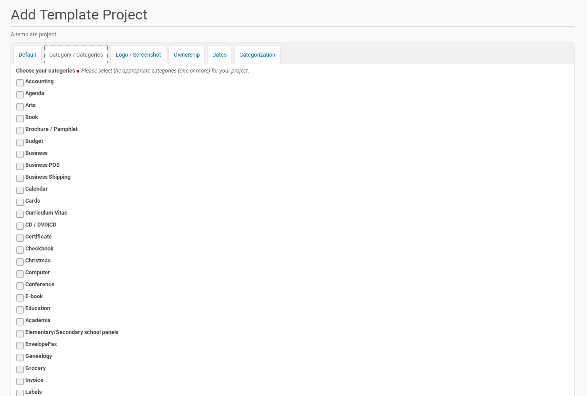

Add A New Template Project To The Template Center¶
A member of the Plone site (logged-in user) could add own template projects to the ‘Template Center’ once he called the appropriate form for new such projects and fill in the necessary data.
He has to click with the mouse first on the link in the box on the right side (see screenshot below).

This mouse click opens the form for providing new Templates. The form dialog consists of several register. The form fields in the first register asks for more general information about the project. It’s possible to edit and change the content of the fields later, if the focus or the features of the project varies.
The First Register ‘Default’¶
The new template project needs its own title with a length from 5 to 50 characters. This title has to be unique inside the ‘Template Center’. If there is already another template project with the same title the member will get an error message with the appropriate information. Thus he had to choose another title for his template project.

A new project needs also a summary and could get a full description of its purpose and features. The latter one is optional (only form fields with a red point behind the title are mandatory).
It’s also necessary that the member provides an email-address. This address will be used to get in contact with the project (owner). The ‘Template Center’ sends e.g. messages if the status of the project changes (e.g. it was published by a reviewer). Users of the project / template could send feedback to the author within a form. The content of this form will be send by email to the project (owner) (The feedback provider will not see the email address of the project).
If there is already a homepage of the template project available on the internet, it is possible to submit it within the correspondending form field. This homepage will be published inside the project ressources on the right side of the template project page. Thus the user of the project / template could reach the external project homepage very easily with only one mouse click.
The Second Register ‘Category / Categories’¶
The template projects were assigned to one or more categories. The creator of the template project could choose on this register one or more categories, the new template project matches. The list of categories on this register had been created by the Plone site administrator within the ‘Template Center’.
{kind=link}
The Third Register ‘Logo / Screenshot’¶
This is the place to submit a project logo or screenshot. It is mandatory to submit one of them. The allowed file extensions are displayed next to the button to call the file dialog. The Plone site administrator choose this allowed file extensions within the ‘Template Center’.